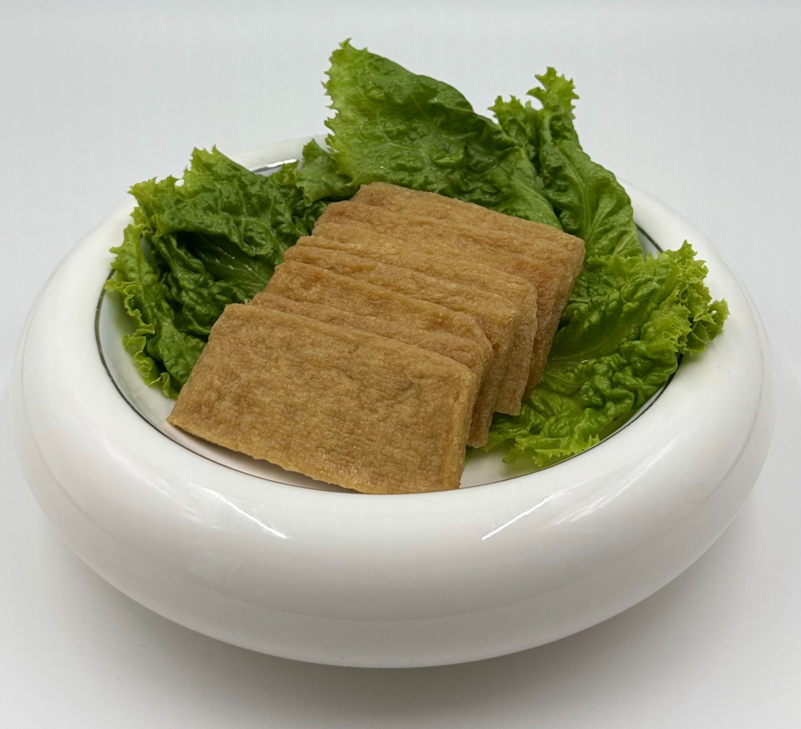

产品中心
 福袋（大）
福袋（大）福袋（大）
容量大、久煮不散，适合关东煮/火锅场景。
福袋（小）
福袋（小）
小巧便当友好，规格可定制。
 信田卷
信田卷信田卷
15g/个×50个/袋等；适配寿司/便当。
 八珍豆腐饼
八珍豆腐饼八珍豆腐饼
复合蔬菜豆制配比；可零售/餐饮装。
味付豆腐片
味付豆腐片
常温/冷藏流通；口味可定制。
 油炸豆腐丝
油炸豆腐丝油炸豆腐丝
便于快餐应用；可做即食零食。
 油炸豆腐皮
油炸豆腐皮油炸豆腐皮
复水口感佳；多种料理应用。
 豆腐蔬菜丸
豆腐蔬菜丸豆腐蔬菜丸
含海苔/蔬菜颗粒；口味可定制。
 味付油揚（方形）
味付油揚（方形）味付油揚（方形）
用于稻荷寿司/乌冬；酱汁可调。
 星形土豆饼
星形土豆饼星形土豆饼
马铃薯泥成形，外酥里绵；油炸/空气炸/烤箱加热皆可。
 味付干瓢
味付干瓢味付干瓢
精选葫芦干条以日式酱汁慢煮入味，适合太卷、关东煮与炖菜。
更多规格可定制，支持样品寄送。